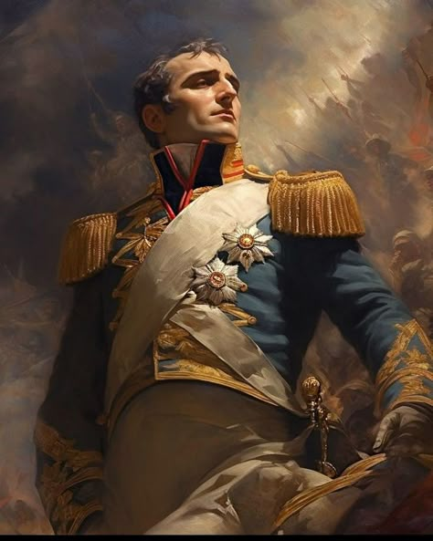

400
14
Napoleon
"Nem vagyok alacsony, csak a látószöged rossz; nem a magasságom számít, hanem a horizontom."
Korzikán születtem 1769-ben, és már fiatalon a hadászat és a stratégia világa vonzott. Katonai tanulmányaimat Franciaországban végeztem, ahol hamar kitűntem tehetségemmel és eltökéltségemmel. A francia forradalom idején gyorsan emelkedtem a ranglétrán, majd 1799-ben átvéve a hatalmat Franciaország első konzulja lettem, később pedig császárrá koronáztam magam.
Nem túl nagy volt az egód?
Waterloo... nem kínos?
Elég nagy volt ahhoz, hogy beleférjen Európa.
Mondjuk úgy, nem az volt a karrierem csúcspontja.